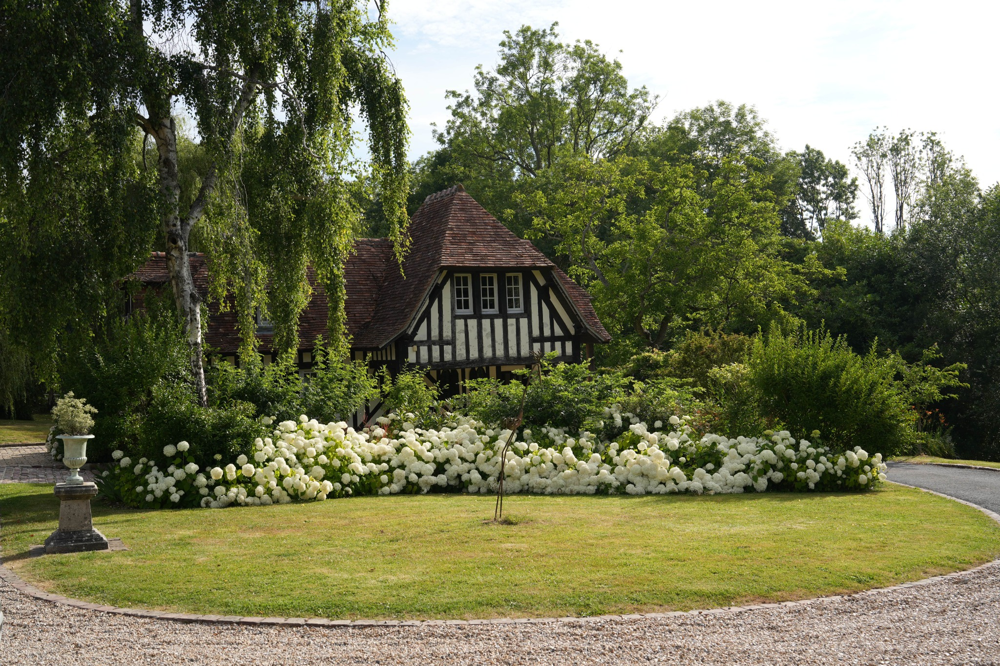
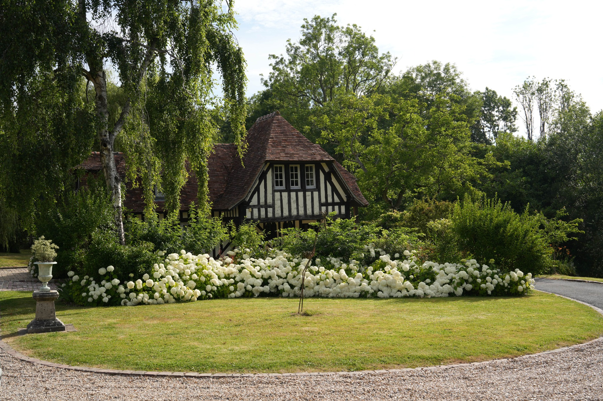

Feiern Sie zeitlose Liebe in der Normandie
Ein romantisches Landgut mit lichtdurchfluteter Orangerie, gepflegten Gärten und Unterkünften vor Ort.
Räume & Kapazitäten
Elf Hektar Parklandschaft mit flexiblen, eleganten Settings: Rasenflächen für Cocktails, freie Trauung und eine spektakuläre Orangerie für Dinner & Tanz.
Kapazität. Bis zu 150 Sitzplätze; Privatparkplatz, barrierefreie Sanitäranlage, Tennis. Optional 240 m² Stretch-Zelt mit Heizung.
Unterkunft. Herrenhaus + Annex für 14–15 Gäste mit eigenen Bädern.

Flexible Bereiche
Freie Trauung, Gartenempfang, Dinner unter Glas.
Keine Sperrstunde
Exklusive Nutzung ohne direkte Nachbarn.
Bewährte Partner
Kuratierte Dienstleister oder Ihr eigenes Team.


{kind=link}
{kind=link}
{kind=link}
Angebot anfragen
Häufige Fragen
Wie viel kostet die Miete eines Veranstaltungsortes für eine Hochzeit im Domaine de Barneville?
Die Miete für einen Hochzeitsveranstaltungsort im Domaine de Barneville beginnt bei 4.500€ und kann individuell angepasst werden (z.B. auch in Ratenzahlung). Melden Sie sich einfach gerne, um Details zu besprechen.
Über welche Einrichtungen verfügt das Domaine de Barneville für Hochzeitsfeiern?
Das Domaine de Barneville verfügt über folgende Einrichtungen und Räume für Hochzeitsfeiern:
- Terrasse
- Garten
- Schwimmbad
- Tanzfläche
- Parkplatz
- Spezialbereich für den Caterer, der direkt neben der Orangerie liegt
- Zelt
- Bereich für eine freie Zeremonie
- Weitere (Tennisplatz)
Welche Dienstleistungen bietet das Domaine de Barneville für Hochzeiten an?
Das Domaine de Barneville bietet folgende Dienstleistungen für Hochzeiten an:
- Bankett
- Zeremonie
- Weitere (Wir bieten die Vermietung des Anwesens für Ihre Veranstaltungen an. Sie haben freie Wahl bei Ihren Dienstleistern, jedoch können wir Ihnen Dienstleister empfehlen, mit denen wir regelmäßig zusammenarbeiten.)
Welche Konfigurationen bietet das Domaine de Barneville für die Hochzeitsempfang?
Das Domaine de Barneville bietet folgende Konfigurationen:
- Stehend
- Sitzend
Welche Arten von Empfang bietet das Domaine de Barneville?
Die verschiedenen Empfangsarten, die das Domaine de Barneville anbietet, sind:
- Empfang
- Empfangs-Cocktail
- Buffet
- Abendessen
- Apéritif
Wie viele Personen können den Hochzeitsempfang im Domaine de Barneville nutzen?
Das Domaine de Barneville bietet seine Hochzeitsdienste für maximal 170 Gäste an.
Wie viele Nutzer empfehlen das Domaine de Barneville und welche Aspekte des Hochzeitsservices werden am besten bewertet?
Das Domaine de Barneville wird von 100% der Paare, die den Service dieses Anbieters in Anspruch genommen haben, empfohlen. Die Gesamtbewertung beträgt 5,0 und wurde für die Qualität des Services, Flexibilität, Preis-Leistungs-Verhältnis, Professionalität und Reaktionszeit vergeben.
Gibt es Sonderangebote oder Rabattaktionen für Hochzeitsdienstleistungen?
Aktuell gibt es keine Rabattaktionen, jedoch bietet das Domaine de Barneville besondere Preise für die Hochsaison und Nebensaison an.
Gibt es eine Liste mit verfügbaren Hochzeitsterminen?
Aktuell bieten wir keine feste Liste mit verfügbaren Terminen an. Gerne können Sie das Formular ausfüllen, und wir melden uns so schnell wie möglich, um Ihren gewünschten Termin zu prüfen.
Wie lange können wir das Domaine de Barneville für unsere Hochzeit mieten?
Normalerweise vermieten wir das Domaine de Barneville für ein ganzes Wochenende. Sollten Sie jedoch einen anderen Zeitraum wünschen, können wir das gerne individuell mit Ihnen besprechen und anpassen.
Wann können wir mit dem Aufbau und Dekorieren beginnen?
Der Zeitpunkt für den Aufbau und die Dekoration kann individuell nach Absprache festgelegt werden. Wir sind flexibel und können eine Lösung finden, die für Sie passt.
Müssen wir uns um den Abbau kümmern oder ist das im Service enthalten?
Der Abbau muss leider selbst übernommen werden. Allerdings haben wir gute Kontakte zu zuverlässigen Dienstleistern, die wir Ihnen gerne empfehlen können, um Ihnen den Abbau so angenehm wie möglich zu gestalten.
Gibt es genug Parkplätze für alle unsere Gäste?
Ja, wir bieten einen sehr großen Parkplatz, auf dem ausreichend Platz für alle Ihre Gäste vorhanden ist.
Bietet das Domaine de Barneville einen Shuttle-Service für Gäste an, die nicht mit dem Auto kommen können?
Leider bieten wir keinen Shuttle-Service an, aber wir können Ihnen gerne Kontakte zu geeigneten Anbietern vermitteln, die diesen Service für Ihre Gäste übernehmen können.
Gibt es eine gute Anbindung an öffentliche Verkehrsmittel für unsere Gäste, die von weiter her anreisen?
Das Domaine de Barneville ist gut erreichbar: Der Flughafen Deauville ist nur 10 Minuten entfernt, und der Hauptbahnhof in Deauville-Trouville bietet eine direkte Zugverbindung aus Paris. Alternativ können Ihre Gäste auch über die Flughäfen CDG oder Orly in Paris anreisen, die etwa 2,5 Stunden entfernt liegen.
Was ist in der Miete enthalten? Sind Catering und Getränke im Preis enthalten oder müssen diese separat gebucht werden?
Catering und Getränke sind nicht im Mietpreis enthalten und müssen separat organisiert werden. Wir helfen Ihnen jedoch gerne, mit unseren Kontakten und Empfehlungen einen hervorragenden Caterer zu finden, der Ihren Vorstellungen entspricht.
Gibt es verschiedene Hochzeitspakete und was ist in jedem Paket enthalten?
Derzeit bieten wir keine festen Hochzeitspakete an. Wir arbeiten mit Ihnen zusammen, um das perfekte Paket für Ihre Bedürfnisse zu erstellen. Lassen Sie uns wissen, was Sie sich wünschen, und wir helfen Ihnen bei der Umsetzung!
Bieten Sie zusätzliche Dienstleistungen wie einen Hochzeitsplaner oder einen Dekorationsservice an?
Wir bieten keine eigenen Hochzeitsplaner oder Dekorationsservices an, können Ihnen jedoch gerne zuverlässige Partner empfehlen, mit denen wir gute Erfahrungen gemacht haben.
Was passiert, wenn es an unserem Hochzeitstag regnet? Gibt es eine Wettersicherung für die Zeremonie oder den Empfang?
Im Falle von schlechtem Wetter bieten wir Zelte an, die regendicht sind, damit Ihre Zeremonie und der Empfang trotzdem unbeschwert stattfinden können. Ein kleiner Tipp: Das ist Teil des Charmes der Normandie – der Regen gehört hier irgendwie dazu!
Können wir das Zelt auch in der Nebensaison nutzen, oder ist es nur in der Hochsaison verfügbar?
Das Zelt steht Ihnen das ganze Jahr über zur Verfügung, auch in der Nebensaison. Wenn Sie also einen Winterhochzeit oder eine Feier zu einer anderen Jahreszeit planen, können wir das Zelt gerne für Sie organisieren.
Können wir unsere eigene Dekoration mitbringen oder gibt es Einschränkungen bei der Dekoration?
Natürlich können Sie Ihre eigene Dekoration mitbringen! Wir möchten, dass Ihre Hochzeit so individuell wie möglich ist, und freuen uns, wenn Sie Ihre persönlichen Akzente setzen.
Haben Sie Empfehlungen für einen Floristen, Fotografen oder einen DJ?
Ja, wir haben eine gute Übersicht über Dienstleister aus der Region, mit denen wir regelmäßig zusammenarbeiten. Auf Wunsch geben wir Ihnen gerne Empfehlungen für Floristen, Fotografen, DJs und andere Dienstleister, die Ihre Hochzeit unvergesslich machen werden.
Gibt es Einschränkungen bei der Beleuchtung oder der Musik, z.B. Lautstärke oder Lichtgestaltung?
Es gibt keine Einschränkungen bei der Beleuchtung oder der Musik – Sie können die Atmosphäre ganz nach Ihrem Geschmack gestalten. Es gibt keinerlei Lautstärkebeschränkungen, und Sie können die Beleuchtung und Musik nach Belieben anpassen.
Gibt es in der Nähe des Domaine de Barneville Hotels oder Unterkünfte für unsere Gäste?
Ja, da das Domaine de Barneville in einer beliebten touristischen Region liegt, gibt es viele Hotels und Unterkünfte in der Nähe. Wir können Ihnen auf Wunsch auch eine Liste mit Empfehlungen zur Verfügung stellen.
Bietet das Domaine de Barneville auch Übernachtungsmöglichkeiten oder Unterkünfte an?
Ja, wir bieten auch Übernachtungsmöglichkeiten für Ihre Gäste an. Gerne teilen wir Ihnen die verfügbaren Optionen mit und helfen Ihnen, die besten Unterkünfte zu finden.
Darf unsere eigene Hochzeitstorte mitgebracht werden?
Ja, Sie können gerne Ihre eigene Hochzeitstorte mitbringen. Wir möchten, dass Ihre Hochzeit perfekt wird und unterstützen Sie, wo wir können!
Gibt es eine Lautstärkebeschränkung für die Musik oder die Feier?
Nein, es gibt keine Lautstärkebeschränkung für Ihre Feier. Sie können so laut feiern, wie Sie möchten – das Domaine de Barneville bietet ausreichend Platz für Ihre unbeschwerte Feier!
Wie spät dürfen wir feiern? Gibt es eine Sperrstunde?
Es gibt keine Sperrstunde! Sie können so lange feiern, wie Sie möchten – wir möchten, dass Ihre Hochzeit rundum unvergesslich wird.
Wie geht das Domaine de Barneville mit Sicherheitsvorkehrungen um?
Das Domaine de Barneville sorgt dafür, dass alle notwendigen Sicherheitsvorkehrungen getroffen werden, damit Ihre Feier sicher und reibungslos abläuft. Es gibt immer eine Ansprechperson vor Ort, die bei allen Fragen zur Sicherheit behilflich ist.
Können wir eine religiöse oder kulturelle Zeremonie im Domaine de Barneville durchführen?
Ja, wir bieten die Möglichkeit, eine religiöse oder kulturelle Zeremonie nach Ihren Wünschen durchzuführen. Ob es eine freie Trauung oder eine traditionelle Zeremonie ist – wir unterstützen Sie dabei, Ihre Traumhochzeit zu realisieren.
Verfügbare technische Ausstattung (Lautsprecher, Mikrofone, Projektoren, etc.)?
Das Domaine de Barneville stellt Ihnen Strom- und Wasseranschlüsse zur Verfügung, allerdings können Lautsprecher, Mikrofone und Projektoren nur über externe Anbieter gemietet werden. Wir helfen Ihnen gerne, den passenden Kontakt für diese Technik zu finden.
Ansprechpartner vor Ort?
Wir stellen sicher, dass immer eine Ansprechperson vor Ort ist, die Sie bei der Planung und während der Feier unterstützt. Sie müssen sich um nichts kümmern – wir sind für Sie da!